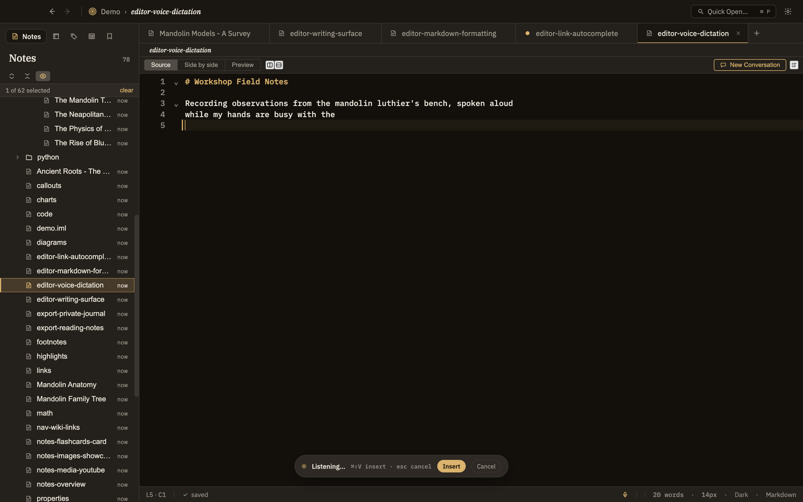

Voice dictation
Would rather talk than type? Speak into the note you're editing and Minerva writes down what you said, dropping the text right where your cursor is. Everything happens on your own computer — your voice never leaves it.
Dictation runs entirely on your machine. Your recorded voice is used to produce the text and is never sent anywhere. The very first time you dictate, Minerva downloads a small speech model; after that it works even offline.
Starting and stopping
Dictation is a simple on/off toggle: trigger it once to start listening, and again to stop and drop the text into your note. You can start it three ways:
While you're speaking, a small pill at the bottom of the window shows Listening… with Insert and Cancel buttons. Press Esc to cancel without inserting anything. When you stop, the pill briefly shows that it's writing out your words; the finished text appears at your cursor, with a space added automatically so it doesn't run into the word before it.
Speed vs. accuracy
In Settings you can choose how carefully Minerva listens. A lighter option is fastest but a little rougher; a heavier one is more accurate but takes longer. The middle option is a good default for most people.
